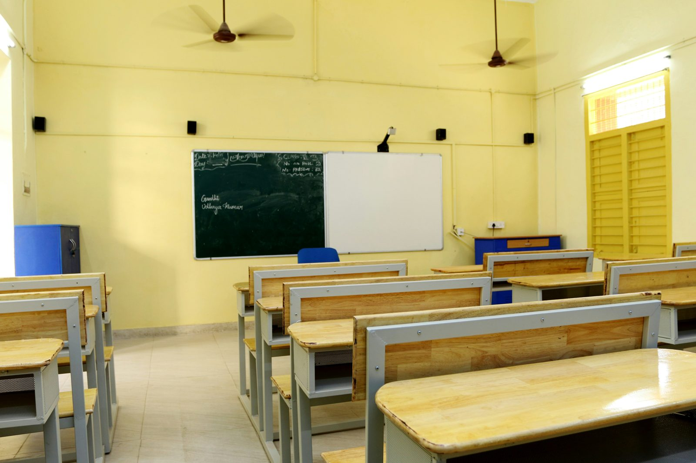

Internship & Practicum
My supported teaching in schools took place at St Anthony R/C Basic School, New Achimota. This section highlights what I did there and what I learned about teaching and school life.
St Anthony R/C Basic School
Year Two Placement · Supported Teaching in Schools

About St Anthony R/C
St Anthony R/C Basic School, located at New Achimota in Accra, is a public basic school under the Catholic Education Unit in the Ga North Municipality. The school blends rigorous academic training with the core pillars of the Catholic faith: knowledge, character and discipline. Its facilities include classroom blocks, a library, a computer laboratory, a science laboratory and a staff common room.
The school works with the Catholic Church, its Parent-Teacher Association (PTA) and its School Management Committee (SMC).
Main Responsibilities
- Taught Social Studies lessons to Basic 7, Basic 8 and Basic 9 classes.
- Observed and recorded teachers' behaviours, attitudes and practices in the classroom and wider school life.
- Held reflective sessions on teacher professionalism with my mentor and STS partner.
- Reviewed my personal teaching philosophy with my mentor and STS partner.
- Collected artefacts for my professional teaching portfolio.
Goals of the Internship
- Gain practical teaching experience in a real school.
- Build my confidence in front of learners.
- Learn how to make lessons meaningful and engaging for different learners.
- Watch closely how teachers manage the classroom, ask questions and support learners with different abilities.
Challenges & Solutions
The main challenges I faced during my internship.
Learners with Different Abilities
Managing learners with different learning abilities, so that both fast and slow learners could keep up with the lesson.
Classroom Discipline
Maintaining discipline in large, noisy classes. Clear rules, such as punctuality and respect for teachers and classmates, helped keep order.
Teaching & Learning Materials
Selecting appropriate teaching and learning materials, often using simple local materials where resources were limited.
Instructional Time
Managing instructional time effectively, so that each part of the lesson got the attention it needed.
Core Values in Practice
The traits I want to model as a teacher are punctuality, patience, good preparation, respect and fairness, and creativity. Punctuality models discipline and protects learning time. Patience means staying calm and supporting slow learners.
Creativity means using simple local materials to make lessons clear, especially where resources are limited.
Wider School Life
At St Anthony R/C Basic School, school life is built on knowledge, character and discipline. Classroom rules are clear: learners must be punctual so they do not miss lessons, and they must respect their teachers and classmates to keep a good learning space.
Teachers check the register in the morning and praise good behaviour. Learners who break the rules receive a warning first, then a task such as sweeping, or a talk with the class teacher.
Skills & Learning Outcomes
Related Reflections
Read my reflections from my placement, including key lessons learned and how they shaped my growth.